I'd like to preface the coming post by stating that I'm generally an optimist, and see great potential in emerging technologies. I am both excited and terrified about the future we're creating, this post leans into the terrified... grain of salt, yadda yadda yadda.
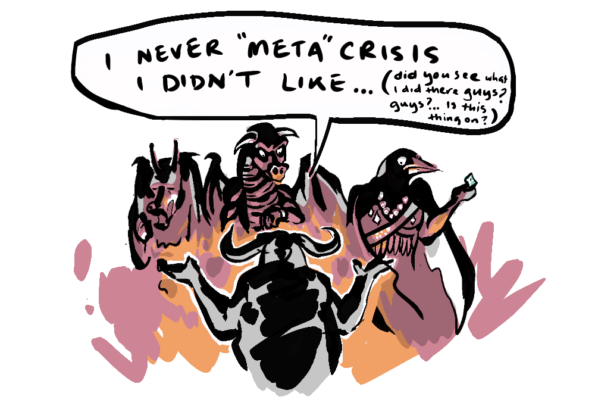
This year the world saw its first trillionaire, in a country run by the first billionaire President*, while what Yuval Noah Harari calls the "useless class" grows amidst a generative AI revolution, which is creating a proliferation of slop undermining our capacity to determine what is true, while driving a greater divide between the capitalist class benefitting from this revolution (with their access to dangerously powerful models) and the rest of us. We are then seeing that wealth spilling over into the very politics that writes the rules for redistribution—so capital can pull up its own draw bridge.
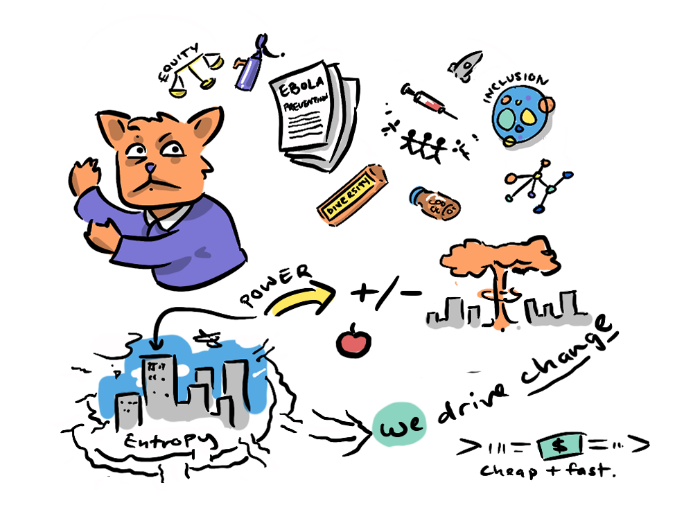
Then we have conflicts from Israel/Palestine to Ukraine, with our "world police" hamstrung by a negligent and belligerent demagogue distracting us from ongoing exisential threats like climate change, which is only worsening. And let's not forget the danger of newly democratised bio-tech, autonomous AI weapons, and cyber-warfare. All this at a time when our geopolitical interdependence are being compromised by a trade war, weakening our international alliances—making nuclear war a real possibility for the first time in decades.
The Metacrisis is where this all comes together.
The Metacrisis is a massive coordination problem facing humanity, which involves many interrelated existential threats that feed on each other and that are fuelled by underlying factors to do with the collective behaviour of individual human beings, all of us—behaviour that is incompatible with the continued existence of humanity.
It is the encapsulation of the existential threat we pose to ourselves—a threat we will all face, sooner or later, whether we choose to or not.
We've touched on the Metacrisis before with its key proponent Daniel Schmactenberger and his example of eliminating elephant poaching in one region only to have poachers move on to other, more endangered, species, but this was just one coordination problem among many. The meta-crisis is vast, and involves a suite of ideas we've explored in other posts, so I will avoid recovering ground, and will instead link to those posts.
One of the problems with choosing to face the metacrisis is its overwhelming complexity. So let's break it down.
In the definitive paragraph above I've highlighted certain elements that benefit from unpacking, and these will form the basis for this post.
- "a massive coordination problem" (Coordination Problems)
- "many Interrelated existential threats" (The Poly-Crisis)
- "incompatible with the continued existence of humanity" (Pathologies)
- "the collective behaviour of individual human beings" (Moloch)
- "fuelled by underlying factors" (The Meta-Crisis)
We will then look towards potential approaches to the Meta-crisis, and to reasons to believe we can solve it, before we go into our final post on a particular solution that takes its lead from Emmett Shear's socialised AI (from earlier in the series) and might even solve humanity's own alignment problem with itself.
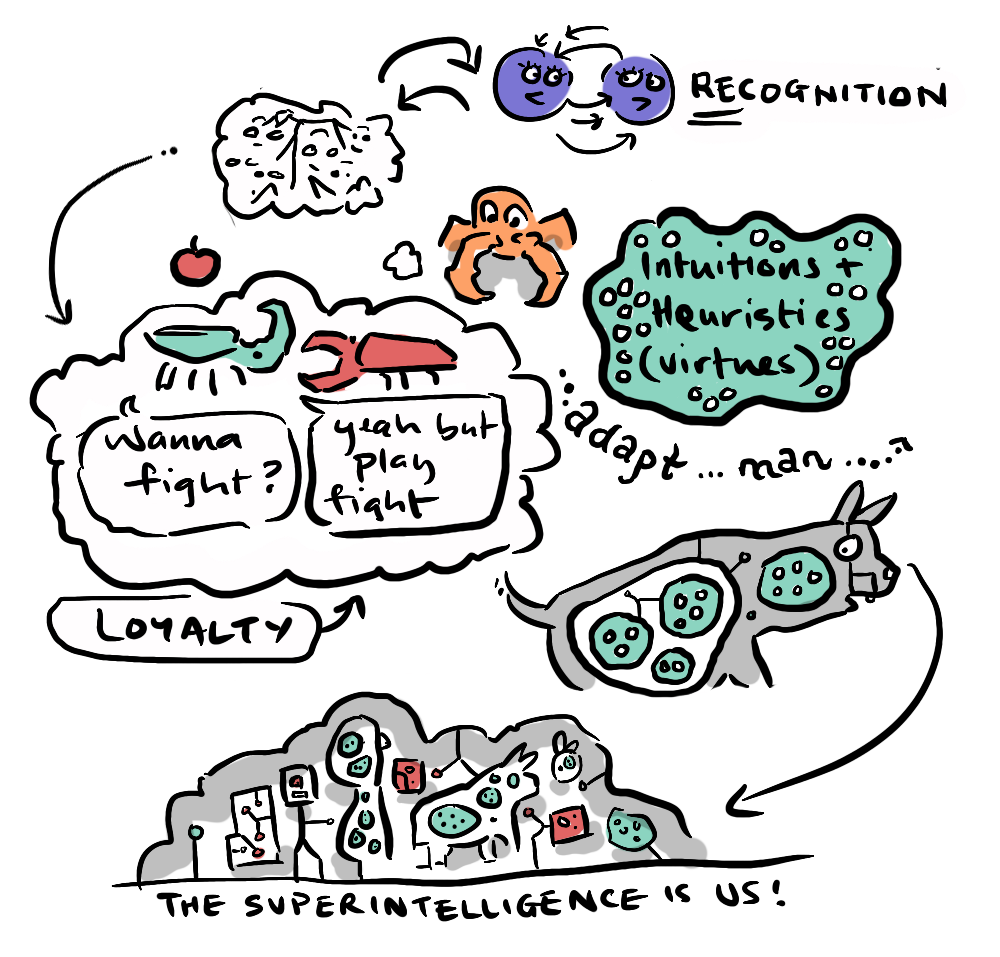
As detailed in the opening paragraphs, the system has fallen out of balance, and a very small group of individuals have adopted an us-or-them attitude toward the rest of the world. In short zero-sum thinking is undermining our capacity for coordination.
In Unlocking Solutions—Coordination Problems we used the example of pins in a lock to illustrate a problem where the solution only works if all the necessary factors causing the problem are addressed at once.
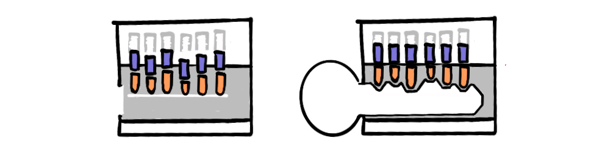
Coordination problems are by their nature very hard to solve, because it's not clear when you're getting closer to a solution—solving one factor sometimes has no impact on the overall problem, as pointed out in Unlocking Solutions:
The fact that they are so much more difficult to solve than other problems means that, many of the problems remaining in the world today, end up being coordination problems.
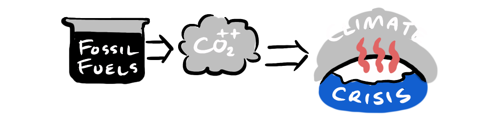
We also see coordination problems when a solution to one problem introduces other problems, we see battery technology helping to reduce carbon emissions, which is great, but the creation of battery technology, and the rare-earth minerals needed for them can end up contributing to many other problems, from environmental deforestation, pollution, the requirement for fossil fuel to create the batteries, worker exploitation, and even geopolitical conflict, like in Ukraine where lithium mines have become a political football.
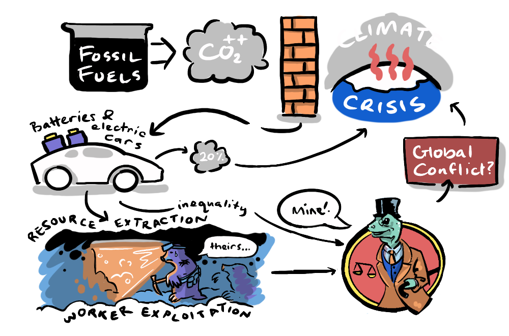
These interconnected problems are known as...
The poly-crisis is the name for all the interrelated existential threats facing humanity, which we have to deal with at the same time. This is not an exhaustive list.
- Climate Change
- Global warming
- Poisoning waterways
- Eco-system collapse
- Natural Disasters
- Meteor Strike / Solar Flares
- Pandemics
- Super-volcanoes!
- Social Collapse
- Economic disaster (regression to a system that cannot sustain our population)
- Fracturing of trust
- Nuclear War
- Artificial Superintelligence Singularity
- Singleton perpetual domination
- Humanity wide genocide
- Other unforeseen or unimaginable dystopias
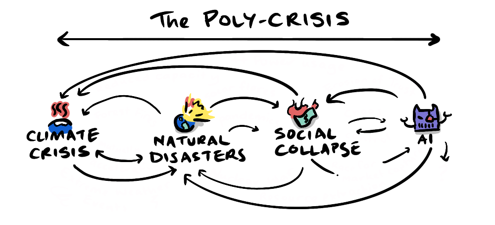
So, what's happening? All these threats getting more likely everyday and, collectively, we're doing nothing to stop it... do we just not care enough?
Yes and no.
Our empathy is one of the most powerful instincts that bond us with each other—aligning our interests in tough times. Humans have a tremendous capacity to help each other, going to great lengths to help our friends and family, or a nearby stranger in grave danger.
... every human being has a basic instinct to help each other out. It might not seem that way sometimes, but it's true.
If a hiker gets lost in the mountains, people will coordinate a search. If a train crashes, people will line up to give blood. If an earthquake levels a city, people all over the world will send emergency supplies. This is so fundamentally human that it's found in every culture without exception. Yes, there are assholes who just don't care, but they're massively outnumbered by the people who do.
—Andy Weir (The Martian)
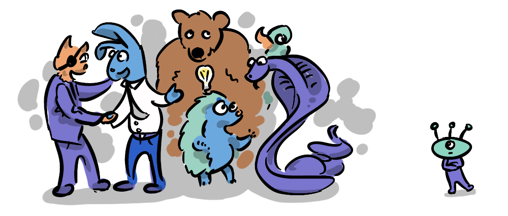
But, at the same time, as our empathy for those close to us is magnified, we correspondingly care less about those outside our sphere of concern. Our in-group/out-group mentality gets stronger in times of strife.
Human prosociality is not a scalar quantity with a gain knob attached. It is a gradient over social distance: steep and high near kin and in-group, falling off quickly with distance, and effectively flat at the level of statistical strangers. This is why we are simultaneously the species that will run into a burning building for a neighbour and the species that can read a famine death toll over breakfast.—Cydonis Heavy Industries "The Missing Specification (For Humanity) And The Great Polycrisis Filter"
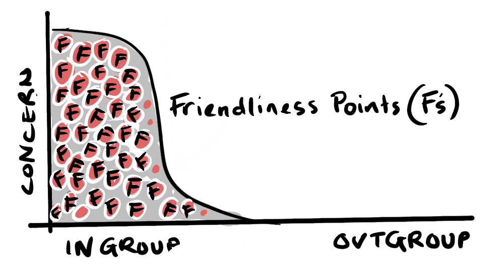
You can imagine this as a graph where the volume under the curve is limited, like a limited amount of "Friendship Points" or "F's"—you only have a limited amount of F's you can give. If you concentrate your Fs close to you, you can be tremendously kind to those around you, but you don't have one single F to spare for those outside your sphere of concern. When everyone starts to not give an F about those outside their in group, we get polarisation and no mutual benefits.
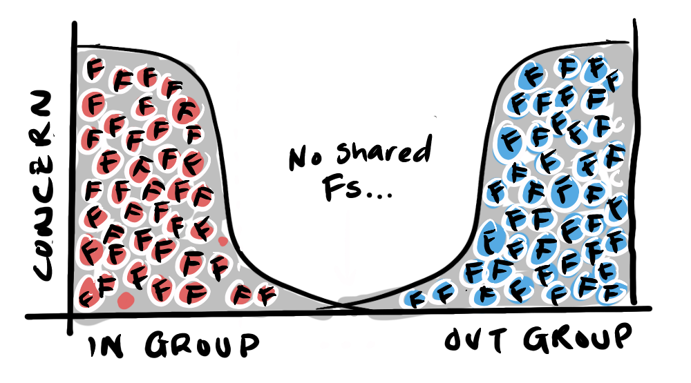
This in-group magnification acts as a sort of societal pathology.
One of the early progenitors of the life-extension movement; Aubrey De Grey, points to seven categories of metabolism where pathology (aging) eventually leads to system wide collapse (death) describing aging as follows:
"I like to think about it in a mechanistic way that helps one consider how to cure it, so my definition is 'the accumulation of side effects of normal metabolism that eventually become pathogenic'"
—Aubrey De Grey
His aim has been to find ways to avoid system wide collapse within the human body by keeping each metabolic category below a pathogenic threshold, focusing efforts on whichever category is getting too close for comfort. To be honest, I don't know how far he has got with that, but it's an unarguable physical truth that a pathology, like cancer or heart disease, cannot be tolerated within in a finite body—this idea stuck with me.
It seems apt when looking at the poly-crisis—to look at each factor in isolation, and make sure than none gets to the point of pathology. As we learned in Bayesian Games With Nukes, one example of this is nuclear war, where, for a long while, we seemed to have had the threat safely below pathogenic levels. But with the introduction of the Bayesian factors introduced by AI, what was a stable equilibrium held by mutual aggression and mutually assured destruction (M.A.D) has been destabilised.
All of the existential threats of the Poly-Crisis are interrelated, we have seen already the propagation of AI is having environmental effects, and as society has become dependent on digital mediation through the internet we become more susceptible to catastrophic events like solar flares that can take out the electric grid for years, while the fracturing of trust between nations and polarisation within nations creates a difficult environment to deal with pandemics—as we've seen. All of this lack of control makes the idea of dominance by an AI singleton become a more acceptable alternative, so any one of these disasters might set about a cascade of other disasters.
This cascade of disasters is something that keeps Kory from "Breaking Down: Collapse" up at night. On his podcast he has candid chats with his curious friend Kellam about the end of the world. He points to Jared Diamond's definition of Collapse:
Collapse is a drastic decrease in human population size and / or political, economic or social complexity over a considerable area for an extended time.—Jared Diamond "Collapse"
In Episode One of over 300 episodes, Kory emphasises the complexity point, and I think this is important, it's not just a reduction in population but a loss of complexity. We've seen in our Emergence series here on the site the priniciple of emergence leading to greater complexity over time. Collapse is a dramatic reversal of this trend, reducing complexity, complexity that we rely on to maintain our population and life as we know it.
Returning to the idea of pathology, Kory takes a similar perspective to Aubrey De Grey (the life extension guy) that any one of many factors could pathologise and lead to collapse, but also recognises that because these factors are interrelated (poly-crisis), no individual factor needs to completely fail—once one factor gets bad enough it will accelerate the other factors.
This is why I think he focuses on the word "collapse": "co" (together) "lapse" (fall). Falling together. Like a jenga tower, one too many failures and the tower collapses. I'm not sure I recommend the series if you want to retain hope for humanity. Kory is not very hopeful, entropy is not on our side.
So, wait, coordination problems, poly-crisis, pathology, multi-polar traps, and collapse...
In short, all of it. But the meta-crisis takes a "meta" (from the outside) view of the problem—focussing on the underlying mechanisms that are fueling these existential threats. Imagine the poly-crisis as a horizontal line of interconnected problems, the metacrisis is a second dimension of vertical layers representing underlying causes—layers that feel like inevitability, but may in fact be named, and perhaps eliminated, and from within a bleak picture open a crack of light shine through.
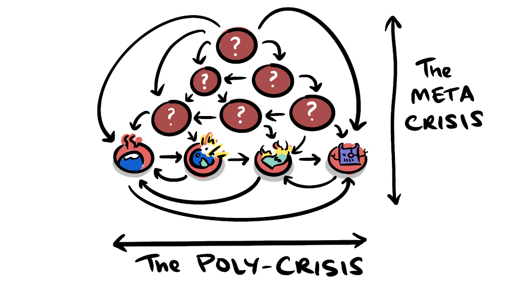
If we hope to come up with solutions that avoid the multi-polar traps of solving one problem only to create another, we will need multi-pronged approaches that require cooperation across sometimes very different groups. It's no easy feat. Here we can learn from Mozart who explain how he concieves his compositions.
Gliech alles zusammen (all together at once)
We have to do what a genius does. See the bigger picture and all the elements together as one. We have to become civilisationally wise. The meta-crisis perspective helps us to find those factors that affect many different areas all at once. In so doing it uses the very interconnected nature of the coordination problem itself to combat it.
Some examples of factors that fuel multiple problems:
- Zenophobia: can lead to anti-immigration policies that hurt the economy, and affect the human rights of asylum seekers, it makes cooperation more difficult within countries and internationally.
- Profit motive: can lead to externalising costs to the environment and exploited workers, manipulating politics, creating products that are ultimately detrimental to their customers (junk food, cigarettes, petrol cars, pornography, illicit drugs, single use appliances).
- Inequality: excesses of wealth lead to social distrust, political manipulation, media manipulation, even military threats. Increased poverty leading to increased crime and further distrust.
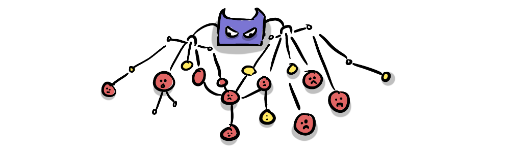
The biggest of all.
- Zero-sum thinking: if there are large swathes of people who believe that for them to prosper others must suffer, then they will act selfishly where cooperation would have had a positive-sum effect. This can play out in merchantile trade relationships, reducing trade cooperation, reducing interdependence, making kinetic war more likely, making production and goods more expensive, labour more exploitative global inequality grow, it can make first strike an option in nuclear standoffs, it can lead to a scarcity mentality amongst the poor and the rich alike making crime a viable option. This can drive polarisation, leading to increasingly radical governments, and potentially civil war.
Finding the root causes fueling existential threats can enable us to have a positive impact in several areas at once.
AI is arguably our biggest threat, it has its own dangers (it's very own category in the poly-crisis) and it also accelerates other threats. But is there a way we can use it to coordinate better?
We've see the dangers of siloed alignment, and at the same time have seen the inability of humanity to align globally, seeming at present to be retreating back into nationalist, and identity groups—dividual entities, leaving us in a precarious situation of having very large, very powerful cooperative silos, in an environment where other very powerful players can arise out of nowhere—an AGI singularity, or a Trillionaire who could at any moment simply purchase a collective of super-soldiers∆.
It's possible our inability to coordinate globally may be partly a technological one. And as mentioned our increasing population is maintained by the increasing complexity—of which technology is a big part.
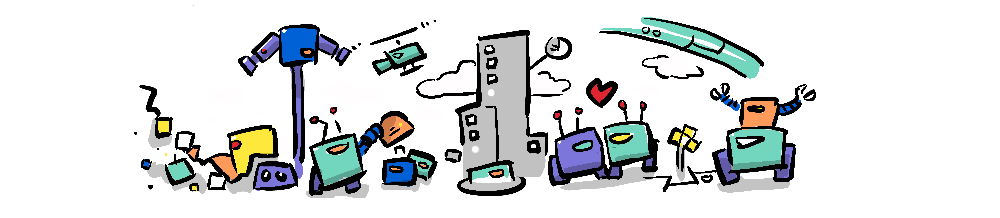
AI is no doubt inheriting much of these biases and bugs, but there's an argument to be made that because AI is trained across many disciplines and across many human perspectives, it may be best suited to aggregate our collective interests. Now, I'm not suggesting we hand over the world-government keys to AI, but that we can use AI to help us find those vertical meta-crisis factors influencing the system, so that we can target them directly, and in doing so unweave the multiple negative factors they're fueling.
AI may be able to "explain it like you would to a 5 year old" (something I've asked chat to do more times that I'd care to admit).
Many of the vertical factors in the metacrisis, are no doubt deeply engrained in our instincts, and call on us to overcome these fight or flight responses, on short to become wise, retreating from each other is not the answer. To bring it back to empathy.
""... the thing that would actually change outcomes at civilisational scale is not the amplitude of caring. It is the shape of the discount function. You do not want a higher curve. You want a flatter one."
—Cydonis Heavy Industries "The Missing Specification (For Humanity) And The Great Polycrisis Filter"
The writers at Cydonis Heavy Industries are suggesting that rather than clinging close to those in our sphere of concern (a higher peak) we must widen our sphere of concern—a flattened curve.
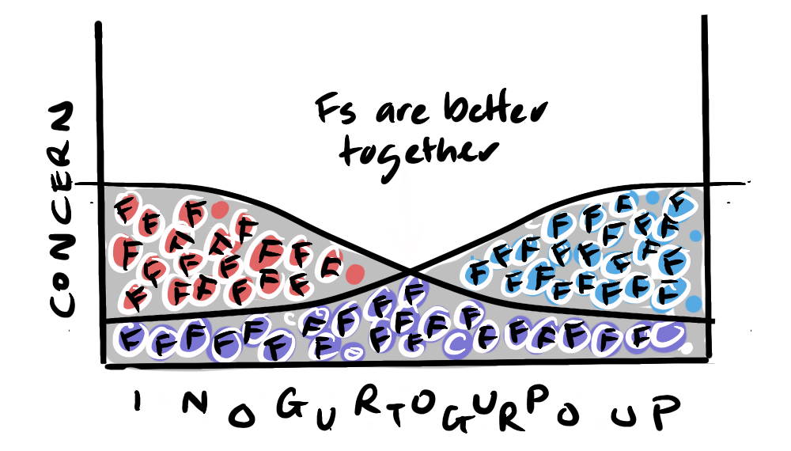
Unfortunately, when we look at the current situation described in the opening paragraphys with members of the billionaire class increasingly involving themselves in media and politics, consolidating power and influence and insulating themselves from the rest of us, we might be flattening the curve in many ways, an some ways a growing peak is becoming narrower every day. Again, I'm hopeful that this is function of Molochian forces, and those can be pushed back against with better stories and coordination.
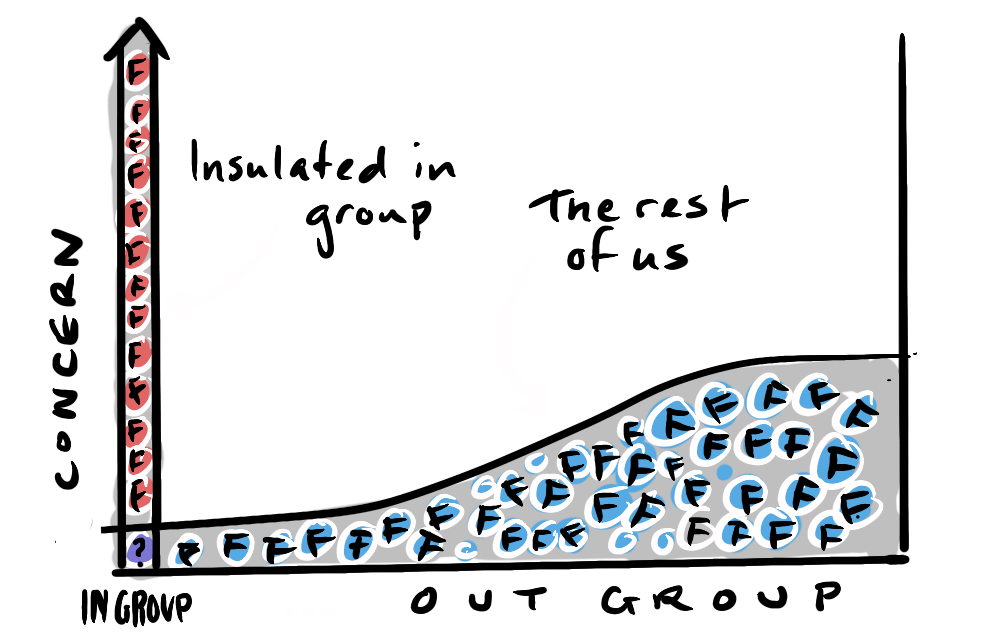
We've seen that the meta-crisis is the mother of all coordination problems, encapsulating the concepts of the Poly-crisis, pathologies, multi-polar traps, and the dynamics of collapse. What the Meta-crisis perspective adds is the idea that there are underlying factors influencing these surface problems, and we can do something about those—and through doing so we can reduce many problems at once.
If we believe that cooperation is the key, then cooperating with AI seems to make sense to me. When facing a powerful opponent who threatens our existence it is in all our best interests to put aside our differences to face it. We are, like it or not, facing these threats on multiple fronts, but there will always be more of us who want to keep the game going—a group I'm calling "The Natural Alliance of Everyone Else" and that will be the subject of the final post.